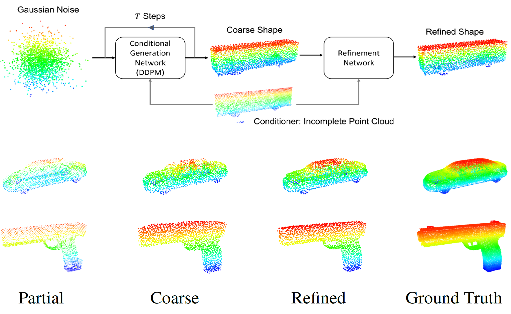

About me
I am a researcher with Shanghai AI Laboratory, working in a research group on Content Generation and Digitization. I received my Ph.D. (2018-2022) from Multimedia Laboratory (MMLab) at CUHK, advised by Prof.Dahua Lin. I obtained my Bachelor's Degree (2014-2018) at Xi'an Jiaotong University.
News
Education
-

- The Chinese University of Hong Kong (CUHK)
- August 2018 - July 2022
- Ph.D. in Information Engineering
-

- Xi'an Jiaotong University (XJTU)
- August 2014 - July 2018
- B.S. in Physics (Experimental Class)
Publications
-
3D Content Generation
-

-
SLIDE: Controllable Mesh Generation Through Sparse Latent
Point Diffusion Models - Zhaoyang Lyu, Jinyi Wang, Yuwei An, Ya Zhang, Dahua Lin, Bo Dai
- IEEE Conference on Computer Vision and Pattern Recognition (CVPR ) 2023
- [Paper] [Code] [Bibtex]
- 
-
A Conditional Point Diffusion-Refinement Paradigm for 3D
Point Cloud Completion - Zhaoyang Lyu, Zhifeng Kong, Xudong Xu, Liang Pan, Dahua Lin
- International Conference on Learning Representations (ICLR ) 2022
- [Paper] [Code] [Bibtex]
-

- MATLABER: Material-Aware Text-to-3D via LAtent BRDF auto-EncodeR
- Xudong Xu, Zhaoyang Lyu, Xingang Pan, Bo Dai
- arXiv preprint
- [Paper] [Code] [Bibtex]
-
Neural Network Robustness
-

- POPQORN: Quantifying robustness of recurrent neural networks
- Ching-Yun Ko, Zhaoyang Lyu (Equal Contribution), Lily Weng, Luca Daniel, Ngai Wong, Dahua Lin
- International Conference on Machine Learning (ICML ) 2019
- [Paper] [Code] [Bibtex]
- Fastened crown: Tightened neural network robustness certificates
- Zhaoyang Lyu, Ching-Yun Ko, Zhifeng Kong, Ngai Wong, Dahua Lin, Luca Daniel
- AAAI Conference on Artificial Intelligence (AAAI ) 2020
- [Paper] [Code] [Bibtex]
-

- Towards evaluating and training verifiably robust neural networks
- Zhaoyang Lyu, Minghao Guo, Tong Wu, Guodong Xu, Kehuan Zhang, Dahua Lin
- IEEE Conference on Computer Vision and Pattern Recognition (CVPR ) 2021
- [Paper] [Code] [Bibtex]
-

- MMDetection3D: The Next-Generation Platform for General 3D Detection
- A versatile, open-source 3D object detection toolbox based on PyTorch
- MMDetection3D Contributors
- May 2020 – Now
- [Code] [Doc] [Bibtex]
-

- Spherical Convolutional Networks for 3D Mesh Processing
- New approaches to generating 3D meshes from scratch with S2 parametrization &extended spherical CNNs
- Zhaoyang Lyu , Weiwei Zhou and Zicheng Liao
- Under revision and further development
- Mar 2018 – Nov 2018
-

- Visiting Scholar, Shanghai AI Laboratory
- July 2020 - Now.  Advisor: Jiangmiao Pang, Kai Chen
- Focus: The next-generation platform for general 3D perception
-

- Adjunct Researcher, Sensetime
- Nov. 2019 - June 2020.  Advisor: Conghui He, Zhe Wang, Jianping Shi
- Focus: Efficient annotation of LiDAR point clouds, development of LiDAR perception system
-

- Junior Research Assistant, The Chinese University of Hong Kong (CUHK)
- Feb. 2019 - May 2019.  Advisor: Dahua Lin
- Focus: Real-time 3D object detection in autonomous driving
-

- Research Intern, Alibaba-ZJU Joint Institute of Frontier Technologies (AZFT)
- Dec. 2017 - June 2019.  Advisor: Zicheng Liao, Gang Wang. I also worked with Dr. Lechao Cheng.
- Focus: Joint analysis of 2D Images and 3D Shapes with machine learning approaches
- Runner-up of Waymo Camera-Only 3D Detection Challenge , CVPR 2022
- Best Paper Award of Workshop on 3D Object Detection from Images , ICCV 2021
- 1st place of vision-only track and best PKL award of overall track, NuScenes 3D Detection Challenge , NeurIPS 2020
- Runner-up of NuScenes LiDAR Segmentation Challenge , NeurIPS 2020
- Gold Medal of Kaggle Competition (Top 1% of Lyft 3D Detection Challenge ), NeurIPS 2019
- Hong Kong PhD Fellowship (HKPFS), 2019
- Chu Kochen Scholarship (Highest scholarship at Zhejiang University), 2018
- Top 10 Students of ZJU (Highest honor for 5 undergraduates/graduates), 2018
- National Scholarship (1.5%), 2017-2018
- First Prize in Physics Competition for Undergraduate, 2017
- Computer Vision (Undergraduate Course), Winter 2018 @ ZJU
- IERG2080: Introduction to Systems Programming, Fall 2020 @ CUHK
- IERG2470B/ESTR2308: Probability Models and Applications (Elite Students), Spring 2021 @ CUHK
Research Projects
Experience
Selected Awards
Teaching
Miscellaneous
Academic Services
I served as a reviewer for CVPR, ICCV, ECCV, CoRL, NeurIPS, ICLR, ICML, WACV, IJCV, TVCG.
Hobbies
Love: üèÄBasketball (I am a big fan of Stephen Curry
and Tracy McGrady
), üéµmusic/üé§singing and good at üñåÔ∏èChinese calligraphy (learned from MA Liangchen
and MA Shanshuang
).